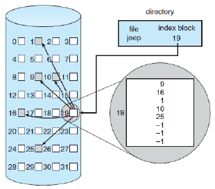

Linked allocation solves the external-fragmentation and size-declaration problems of contiguous allocation. However, in the absence of a FAT, linked allocation cannot support efficient direct access, since the pointers to the blocks are scattered with the blocks themselves all over the disk and must be retrieved in order. Indexed allocation solves this problem by bringing all the pointers together into one location: the index block. Each file has its own index block, which is an array of disk-block addresses. Indexed allocation may require substantial overhead for its index block. Indexed allocation can be done in clusters of multiple blocks to increase throughput and to reduce the number of index entries needed. Indexing in large clusters is similar to contiguous allocation with extents.
